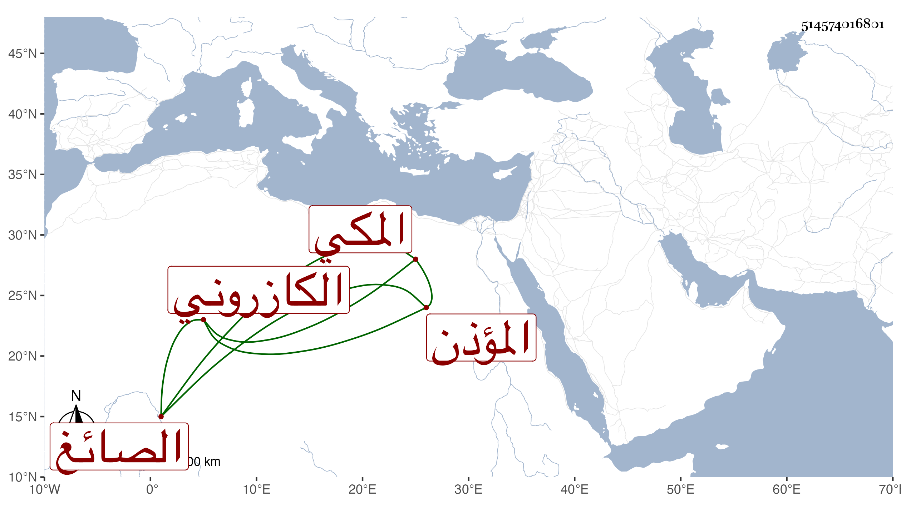

0902Sakhawi.DawLamic.ITO20230111-ara1.EIS1600.514574016801
Biography ID: 514574016801
905
سالم بن ذاكر بن محمد بن عبد المؤمن بن محمد بن ذاكر بن عبد المؤمن بن أبي المعالي بن أبي الخير بن ذاكر الكازروني الأصل المكي المؤذن الصائغ والد محمد وعلي وعبد العزيز . سمع من الإمام أبي اليمن الطبري قطعة من أول الموطأ لابن بكير وأربعين انتقاء الاقفهسي من أبي داود ، وما علمت متى مات .
